The Data Encryption Standard (DES), known as the Data Encryption Algorithm (DEA) by ANSI and the DEA-1 by the ISO, has been a worldwide standard for 20 years. Although it is showing signs of old age, it has held up remarkably well against years of cryptanalysis and is still secure against all but possibly the most powerful of adversaries.
In the early 1970s, nonmilitary cryptographic research was haphazard. Almost no research papers were published in the field. Most people knew that the military used special coding equipment to communicate, but few understood the science of cryptography. The National Security Agency (NSA) had considerable knowledge, but they did not even publicly admit their own existence.
Buyers didn’t know what they were buying. Several small companies made and sold cryptographic equipment, primarily to overseas governments. The equipment was all different and couldn’t interoperate. No one really knew if any of it was secure; there was no independent body to certify the security. As one government report said [441]:
The intricacies of relating key variations and working principles to the real strength of the encryption/decryption equipment were, and are, virtually unknown to almost all buyers, and informed decisions as to the right type of on-line, off-line, key generation, etc., which will meet buyers’ security needs, have been most difficult to make.
In 1972, the National Bureau of Standards (NBS), now the National Institute of Standards and Technology (NIST), initiated a program to protect computer and communications data. As part of that program, they wanted to develop a single, standard cryptographic algorithm. A single algorithm could be tested and certified, and different cryptographic equipment using it could interoperate. It would also be cheaper to implement and readily available.
In the May 15, 1973 Federal Register, the NBS issued a public request for proposals for a standard cryptographic algorithm. They specified a series of design criteria:
Public response indicated that there was considerable interest in a cryptographic standard, but little public expertise in the field. None of the submissions came close to meeting the requirements.
The NBS issued a second request in the August 27, 1974 Federal Register. Eventually they received a promising candidate: an algorithm based on one developed by IBM during the early 1970s, called Lucifer (see Section 13.1). IBM had a team working on cryptography at both Kingston and Yorktown Heights, including Roy Adler, Don Coppersmith, Horst Feistel, Edna Grossman, Alan Konheim, Carl Meyer, Bill Notz, Lynn Smith, Walt Tuchman, and Bryant Tuckerman.
The algorithm, although complicated, was straightforward. It used only simple logical operations on small groups of bits and could be implemented fairly efficiently in hardware.
The NBS requested the NSA’s help in evaluating the algorithm’s security and determining its suitability as a federal standard. IBM had already filed for a patent [514], but was willing to make its intellectual property available to others for manufacture, implementation, and use. Eventually, the NBS worked out the terms of agreement with IBM and received a nonexclusive, royalty-free license to make, use, and sell equipment that implemented the algorithm.
Finally, in the March 17, 1975 Federal Register, the NBS published both the details of the algorithm and IBM’s statement granting a nonexclusive, royalty-free license for the algorithm, and requested comment [536]. Another notice, in the August 1, 1975 Federal Register, again requested comments from agencies and the general public.
And there were comments [721,497,1120]. Many were wary of the NSA’s “invisible hand” in the development of the algorithm. They were afraid that the NSA had modified the algorithm to install a trapdoor. They complained that the NSA reduced the key size from the original 128-bits to 56-bits (see Section 13.1). They complained about the inner workings of the algorithm. Much of NSA’s reasoning became clear in the early 1990s, but in the 1970s this seemed mysterious and worrisome.
In 1976, the NBS held two workshops to evaluate the proposed standard. The first workshop discussed the mathematics of the algorithm and the possibility of a trapdoor [1139]. The second workshop discussed the possibility of increasing the algorithm’s key length [229]. The algorithm’s designers, evaluators, implementors, vendors, users, and critics were invited. From all reports, the workshops were lively [1118].
Despite criticism, the Data Encryption Standard was adopted as a federal standard on November 23, 1976 [229] and authorized for use on all unclassified government communications. The official description of the standard, FIPS PUB 46, “Data Encryption Standard,” was published on January 15, 1977 and became effective six months later [1140]. FIPS PUB 81, “DES Modes of Operation,” was published in 1980 [1143]. FIPS PUB 74, “Guidelines for Implementing and Using the NBS Data Encryption Standard,” was published in 1981 [1142]. NBS also published FIPS PUB 112, specifying DES for password encryption [1144], and FIPS PUB 113, specifying DES for computer data authentication [1145]. (FIPS stands for Federal Information Processing Standard.)
These standards were unprecedented. Never before had an NSA-evaluated algorithm been made public. This was probably the result of a misunderstanding between NSA and NBS. The NSA thought DES was hardware-only. The standard mandated a hardware implementation, but NBS published enough details so that people could write DES software. Off the record, NSA has characterized DES as one of their biggest mistakes. If they knew the details would be released so that people could write software, they would never have agreed to it. DES did more to galvanize the field of cryptanalysis than anything else. Now there was an algorithm to study: one that the NSA said was secure. It is no accident that the next government standard algorithm, Skipjack (see Section 13.12), was classified.
The American National Standards Institute (ANSI) approved DES as a private-sector standard in 1981 (ANSI X3.92) [50]. They called it the Data Encryption Algorithm (DEA). ANSI published a standard for DEA modes of operation (ANSI X3.106) [52], similar to the NBS document, and a standard for network encryption that uses DES (ANSI X3.105) [51].
Two other groups within ANSI, representing retail and wholesale banking, developed DES-based standards. Retail banking involves transactions between financial institutions and private individuals, and wholesale banking involves transactions between financial institutions.
ANSI’s Financial Institution Retail Security Working Group developed a standard for the management and security of PINs (ANSI X9.8) [53] and another DES-based standard for the authentication of retail financial messages (ANSI X9.19) [56]. The group has a draft standard for secure key distribution (ANSI X9.24) [58].
ANSI’s Financial Institution Wholesale Security Working Group developed its own set of standards for message authentication (ANSI X9.9) [54], key management (ANSI X9.17) [55,1151], encryption (ANSI X9.23) [57], and secure personal and node authentication (ANSI X9.26) [59].
The American Bankers Association develops voluntary standards for the financial industry. They published a standard recommending DES for encryption [1], and another standard for managing cryptographic keys [2].
Before the Computer Security Act of 1987, the General Services Administration (GSA) was responsible for developing federal telecommunications standards. Since then, that responsibility transferred to NIST. The GSA published three standards that used DES: two for general security and interoperability requirements (Federal Standard 1026 [662] and Federal Standard 1027 [663]), and one for Group 3 facsimile equipment (Federal Standard 1028) [664].
The Department of the Treasury wrote policy directives requiring that all electronic-funds transfer messages be authenticated with DES [468,470]. They also wrote DES-based criteria that all authentication devices must meet [469].
The ISO first voted to approve DES — they called it the DEA-1 — as an international standard, then decided not to play a role in the standardization of cryptography. However, in 1987 the International Wholesale Financial Standards group of ISO used DES in an international authentication standard [758] and for key management [761]. DES is also specified in an Australian banking standard [1497].
As part of the DES standard, NIST validates implementations of DES. This validation confirms that the implementation follows the standard. Until 1994, NIST only validated hardware and firmware implementations — until then the standard prohibited software implementations. As of March 1995, 73 different implementations had been validated.
NIST also developed a program to certify that authentication equipment conformed to ANSI X9.9 and FIPS 113. As of March, 1995, 33 products had been validated. The Department of the Treasury has an additional certification procedure. NIST also has a program to confirm that equipment conforms to ANSI X9.17 for wholesale key management [1151]; four products have been validated as of March, 1995.
The terms of the DES standard stipulate that it be reviewed every five years. In 1983 DES was recertified without a hitch. In the March 6, 1987 Federal Register, NBS published a request for comments on the second five-year review. NBS offered three alternatives for consideration [1480,1481]: reaffirm the standard for another five years, withdraw the standard, or revise the applicability of the standard.
NBS and NSA reviewed the standard. NSA was more involved this time. Because of an executive directive called NSDD-145, signed by Reagan, NSA had veto power over the NBS in matters of cryptography. Initially, the NSA announced that it would not recertify the standard. The problem was not that DES had been broken, or even that it was suspected of having been broken. It was simply increasingly likely that it would soon be broken.
In its place, the NSA proposed the Commercial COMSEC Endorsement Program (CCEP), which would eventually provide a series of algorithms to replace DES [85]. These NSA-designed algorithms would not be made public, and would only be available in tamper-proof VLSI chips (see Section 25.1).
This announcement wasn’t well received. People pointed out that business (especially the financial industry) uses DES extensively, and that no adequate alternative is available. Withdrawal of the standard would leave many organizations with no data protection. After much debate, DES was reaffirmed as a U.S. government standard until 1992 [1141]. According to the NBS, DES would not be certified again [1480].
Never say “not.” In 1992, there was still no alternative for DES. The NBS, now called NIST, again solicited comments on DES in the Federal Register [540]:
The purpose of this notice is to announce the review to assess the continued adequacy of the standard to protect computer data. Comments from industry and the public are invited on the following alternatives for FIPS 46-1. The costs (impacts) and benefits of these alternatives should be included in the comments:
The comment period closed on December 10, 1992. According to Raymond Kammer, then the acting director of NIST [813]:
Last year, NIST formally solicited comments on the recertification of DES. After reviewing those comments, and the other technical inputs that I have received, I plan to recommend to the Secretary of Commerce that he recertify DES for another five years. I also plan to suggest to the Secretary that when we announce the recertification we state our intention to consider alternatives to it over the next five years. By putting that announcement on the table, we hope to give people an opportunity to comment on orderly technological transitions. In the meantime, we need to consider the large installed base of systems that rely upon this proven standard.
Even though the Office of Technology Assessment quoted NIST’s Dennis Branstead as saying that the useful lifetime of DES would end in the late 1990s [1191], the algorithm was recertified for another five years [1150]. Software implementations of DES were finally allowed to be certified.
Anyone want to guess what will happen in 1998?
DES is a block cipher; it encrypts data in 64-bit blocks. A 64-bit block of plaintext goes in one end of the algorithm and a 64-bit block of ciphertext comes out the other end. DES is a symmetric algorithm: The same algorithm and key are used for both encryption and decryption (except for minor differences in the key schedule).
The key length is 56 bits. (The key is usually expressed as a 64-bit number, but every eighth bit is used for parity checking and is ignored. These parity bits are the least-significant bits of the key bytes.) The key can be any 56-bit number and can be changed at any time. A handful of numbers are considered weak keys, but they can easily be avoided. All security rests within the key.
At its simplest level, the algorithm is nothing more than a combination of the two basic techniques of encryption: confusion and diffusion. The fundamental building block of DES is a single combination of these techniques (a substitution followed by a permutation) on the text, based on the key. This is known as a round. DES has 16 rounds; it applies the same combination of techniques on the plaintext block 16 times (see Figure 12.1).
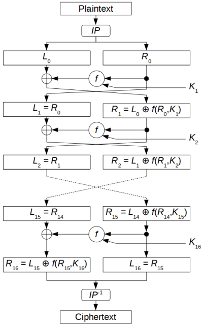
Figure 12.1 DES.
The algorithm uses only standard arithmetic and logical operations on numbers of 64 bits at most, so it was easily implemented in late 1970s hardware technology. The repetitive nature of the algorithm makes it ideal for use on a special-purpose chip. Initial software implementations were clumsy, but current implementations are better.
DES operates on a 64-bit block of plaintext. After an initial permutation, the block is broken into a right half and a left half, each 32 bits long. Then there are 16 rounds of identical operations, called Function f, in which the data are combined with the key. After the sixteenth round, the right and left halves are joined, and a final permutation (the inverse of the initial permutation) finishes off the algorithm.
In each round (see Figure 12.2), the key bits are shifted, and then 48 bits are selected from the 56 bits of the key. The right half of the data is expanded to 48 bits via an expansion permutation, combined with 48 bits of a shifted and permuted key via an XOR, sent through 8 S-boxes producing 32 new bits, and permuted again. These four operations make up Function f. The output of Function f is then combined with the left half via another XOR. The result of these operations becomes the new right half; the old right half becomes the new left half. These operations are repeated 16 times, making 16 rounds of DES.
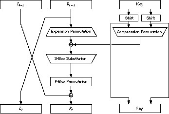
Figure 12.2 One round of DES.
If Bi is the result of the ith iteration, Li and Ri are the left and right halves of Bi, Ki is the 48-bit key for round i, and f is the function that does all the substituting and permuting and XORing with the key, then a round looks like:
Li = Ri-1 Ri = Li-1 ⊕ f(Ri-1, Ki)
The initial permutation occurs before round 1; it transposes the input block as described in Table 12.1. This table, like all the other tables in this chapter, should be read left to right, top to bottom. For example, the initial permutation moves bit 58 of the plaintext to bit position 1, bit 50 to bit position 2, bit 42 to bit position 3, and so forth.
| 58 | 50 | 42 | 34 | 26 | 18 | 10 | 2 | 60 | 52 | 44 | 36 | 28 | 20 | 12 | 4 |
| 62 | 54 | 46 | 38 | 30 | 22 | 14 | 6 | 64 | 56 | 48 | 40 | 32 | 24 | 16 | 8 |
| 57 | 49 | 41 | 33 | 25 | 17 | 9 | 1 | 59 | 51 | 43 | 35 | 27 | 19 | 11 | 3 |
| 61 | 53 | 45 | 37 | 29 | 21 | 13 | 5 | 63 | 55 | 47 | 39 | 31 | 23 | 15 | 7 |
The initial permutation and the corresponding final permutation do not affect DES’s security. (As near as anyone can tell, its primary purpose is to make it easier to load plaintext and ciphertext data into a DES chip in byte-sized pieces. Remember that DES predates 16-bit or 32-bit microprocessor busses.) Since this bit-wise permutation is difficult in software (although it is trivial in hardware), many software implementations of DES leave out both the initial and final permutations. While this new algorithm is no less secure than DES, it does not follow the DES standard and should not be called DES.
Initially, the 64-bit DES key is reduced to a 56-bit key by ignoring every eighth bit. This is described in Table 12.2. These bits can be used as parity check to ensure the key is error-free. After the 56-bit key is extracted, a different 48-bit subkey is generated for each of the 16 rounds of DES. These subkeys, Ki are determined in the following manner.
| 57 | 49 | 41 | 33 | 25 | 17 | 9 | 1 | 58 | 50 | 42 | 34 | 26 | 18 |
| 10 | 2 | 59 | 51 | 43 | 35 | 27 | 19 | 11 | 3 | 60 | 52 | 44 | 36 |
| 63 | 55 | 47 | 39 | 31 | 23 | 15 | 7 | 62 | 54 | 46 | 38 | 30 | 22 |
| 14 | 6 | 61 | 53 | 45 | 37 | 29 | 21 | 13 | 5 | 28 | 20 | 12 | 4 |
First, the 56-bit key is divided into two 28-bit halves. Then, the halves are circularly shifted left by either one or two bits, depending on the round. This shift is given in Table 12.3.
| Round | 1 | 2 | 3 | 4 | 5 | 6 | 7 | 8 | 9 | 10 | 11 | 12 | 13 | 14 | 15 | 16 |
| Number | 1 | 1 | 2 | 2 | 2 | 2 | 2 | 2 | 1 | 2 | 2 | 2 | 2 | 2 | 2 | 1 |
After being shifted, 48 out of the 56 bits are selected. Because this operation permutes the order of the bits as well as selects a subset of bits, it is called a compression permutation. This operation provides a subset of 48 bits. Table 12.4 defines the compression permutation (also called the permuted choice). For example, the bit in position 33 of the shifted key moves to position 35 of the output, and the bit in position 18 of the shifted key is ignored.
| 14 | 17 | 11 | 24 | 1 | 5 | 3 | 28 | 15 | 6 | 21 | 10 |
| 23 | 19 | 12 | 4 | 26 | 8 | 16 | 7 | 27 | 20 | 13 | 2 |
| 41 | 52 | 31 | 37 | 47 | 55 | 30 | 40 | 51 | 45 | 33 | 48 |
| 44 | 49 | 39 | 56 | 34 | 53 | 46 | 42 | 50 | 36 | 29 | 32 |
Because of the shifting, a different subset of key bits is used in each subkey. Each bit is used in approximately 14 of the 16 subkeys, although not all bits are used exactly the same number of times.
This operation expands the right half of the data, Ri, from 32 bits to 48 bits. Because this operation changes the order of the bits as well as repeating certain bits, it is known as an expansion permutation. This operation has two purposes: It makes the right half the same size as the key for the XOR operation and it provides a longer result that can be compressed during the substitution operation. However, neither of those is its main cryptographic purpose. By allowing one bit to affect two substitutions, the dependency of the output bits on the input bits spreads faster. This is called an avalanche effect. DES is designed to reach the condition of having every bit of the ciphertext depend on every bit of the plaintext and every bit of the key as quickly as possible.
Figure 12.3 defines the expansion permutation. This is sometimes called the E-box. For each 4-bit input block, the first and fourth bits each represent two bits of the output block, while the second and third bits each represent one bit of the output block. Table 12.5 shows which output positions correspond to which input positions. For example, the bit in position 3 of the input block moves to position 4 of the output block, and the bit in position 21 of the input block moves to positions 30 and 32 of the output block. Although the output block is larger than the input block, each input block generates a unique output block.
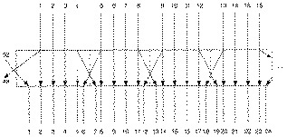
Figure 12.3 Expansion permutation.
| 32 | 1 | 2 | 3 | 4 | 5 | 4 | 5 | 6 | 7 | 8 | 9 |
| 8 | 9 | 10 | 11 | 12 | 13 | 12 | 13 | 14 | 15 | 16 | 17 |
| 16 | 17 | 18 | 19 | 20 | 21 | 20 | 21 | 22 | 23 | 24 | 25 |
| 24 | 25 | 26 | 27 | 28 | 29 | 28 | 29 | 30 | 31 | 32 | 1 |
After the compressed key is XORed with the expanded block, the 48-bit result moves to a substitution operation. The substitutions are performed by eight substitution boxes, or S-boxes. Each S-box has a 6-bit input and a 4-bit output, and there are eight different S-boxes. (The total memory requirement for the eight DES S-boxes is 256 bytes.) The 48 bits are divided into eight 6-bit sub-blocks. Each separate block is operated on by a separate S-box: The first block is operated on by S-box 1, the second block is operated on by S-box 2, and so on. See Figure 12.4.
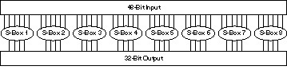
Figure 12.4 S-box substitution.
Each S-box is a table of 4 rows and 16 columns. Each entry in the box is a 4-bit number. The 6 input bits of the S-box specify under which row and column number to look for the output. Table 12.6 shows all eight S-boxes.
| S-box 1: | |||||||||||||||
| 14 | 4 | 13 | 1 | 2 | 15 | 11 | 8 | 3 | 10 | 6 | 12 | 5 | 9 | 0 | 7 |
| 0 | 15 | 7 | 4 | 14 | 2 | 13 | 1 | 10 | 6 | 12 | 11 | 9 | 5 | 3 | 8 |
| 4 | 1 | 14 | 8 | 13 | 6 | 2 | 11 | 15 | 12 | 9 | 7 | 3 | 10 | 5 | 0 |
| 15 | 12 | 8 | 2 | 4 | 9 | 1 | 7 | 5 | 11 | 3 | 14 | 10 | 0 | 6 | 13 |
| S-box 2: | |||||||||||||||
| 15 | 1 | 8 | 14 | 6 | 11 | 3 | 4 | 9 | 7 | 2 | 13 | 12 | 0 | 5 | 10 |
| 3 | 13 | 4 | 7 | 15 | 2 | 8 | 14 | 12 | 0 | 1 | 10 | 6 | 9 | 11 | 5 |
| 0 | 14 | 7 | 11 | 10 | 4 | 13 | 1 | 5 | 8 | 12 | 6 | 9 | 3 | 2 | 15 |
| 13 | 8 | 10 | 1 | 3 | 15 | 4 | 2 | 11 | 6 | 7 | 12 | 0 | 5 | 14 | 9 |
| S-box 3: | |||||||||||||||
| 10 | 0 | 9 | 14 | 6 | 3 | 15 | 5 | 1 | 13 | 12 | 7 | 11 | 4 | 2 | 8 |
| 13 | 7 | 0 | 9 | 3 | 4 | 6 | 10 | 2 | 8 | 5 | 14 | 12 | 11 | 15 | 1 |
| 13 | 6 | 4 | 9 | 8 | 15 | 3 | 0 | 11 | 1 | 2 | 12 | 5 | 10 | 14 | 7 |
| 1 | 10 | 13 | 0 | 6 | 9 | 8 | 7 | 4 | 15 | 14 | 3 | 11 | 5 | 2 | 12 |
| S-box 4: | |||||||||||||||
| 7 | 13 | 14 | 3 | 0 | 6 | 9 | 10 | 1 | 2 | 8 | 5 | 11 | 12 | 4 | 15 |
| 13 | 8 | 11 | 5 | 6 | 15 | 0 | 3 | 4 | 7 | 2 | 12 | 1 | 10 | 14 | 9 |
| 10 | 6 | 9 | 0 | 12 | 11 | 7 | 13 | 15 | 1 | 3 | 14 | 5 | 2 | 8 | 4 |
| 3 | 15 | 0 | 6 | 10 | 1 | 13 | 8 | 9 | 4 | 5 | 11 | 12 | 7 | 2 | 14 |
| S-box 5: | |||||||||||||||
| 2 | 12 | 4 | 1 | 7 | 10 | 11 | 6 | 8 | 5 | 3 | 15 | 13 | 0 | 14 | 9 |
| 14 | 11 | 2 | 12 | 4 | 7 | 13 | 1 | 5 | 0 | 15 | 10 | 3 | 9 | 8 | 6 |
| 4 | 2 | 1 | 11 | 10 | 13 | 7 | 8 | 15 | 9 | 12 | 5 | 6 | 3 | 0 | 14 |
| 11 | 8 | 12 | 7 | 1 | 14 | 2 | 13 | 6 | 15 | 0 | 9 | 10 | 4 | 5 | 3 |
| S-box 6: | |||||||||||||||
| 12 | 1 | 10 | 15 | 9 | 2 | 6 | 8 | 0 | 13 | 3 | 4 | 14 | 7 | 5 | 11 |
| 10 | 15 | 4 | 2 | 7 | 12 | 9 | 5 | 6 | 1 | 13 | 14 | 0 | 11 | 3 | 8 |
| 9 | 14 | 15 | 5 | 2 | 8 | 12 | 3 | 7 | 0 | 4 | 10 | 1 | 13 | 11 | 6 |
| 4 | 3 | 2 | 12 | 9 | 5 | 15 | 10 | 11 | 14 | 1 | 7 | 6 | 0 | 8 | 13 |
| S-box 7: | |||||||||||||||
| 4 | 11 | 2 | 14 | 15 | 0 | 8 | 13 | 3 | 12 | 9 | 7 | 5 | 10 | 6 | 1 |
| 13 | 0 | 11 | 7 | 4 | 9 | 1 | 10 | 14 | 3 | 5 | 12 | 2 | 15 | 8 | 6 |
| 1 | 4 | 11 | 13 | 12 | 3 | 7 | 14 | 10 | 15 | 6 | 8 | 0 | 5 | 9 | 2 |
| 6 | 11 | 13 | 8 | 1 | 4 | 10 | 7 | 9 | 5 | 0 | 15 | 14 | 2 | 3 | 12 |
| S-box 8: | |||||||||||||||
| 13 | 2 | 8 | 4 | 6 | 15 | 11 | 1 | 10 | 9 | 3 | 14 | 5 | 0 | 12 | 7 |
| 1 | 15 | 13 | 8 | 10 | 3 | 7 | 4 | 12 | 5 | 6 | 11 | 0 | 14 | 9 | 2 |
| 7 | 11 | 4 | 1 | 9 | 12 | 14 | 2 | 0 | 6 | 10 | 13 | 15 | 3 | 5 | 8 |
| 2 | 1 | 14 | 7 | 4 | 10 | 8 | 13 | 15 | 12 | 9 | 0 | 3 | 5 | 6 | 11 |
The input bits specify an entry in the S-box in a very particular manner. Consider an S-box input of 6 bits, labeled b1 b2 b3 b4 b5 and b6. Bits b1 and b6 are combined to form a 2-bit number, from 0 to 3, which corresponds to a row in the table. The middle 4 bits, b2 through b5 are combined to form a 4-bit number, from 0 to 15, which corresponds to a column in the table.
For example, assume that the input to the sixth S-box (i.e., bits 31 through 36 of the XOR function) is 110011. The first and last bits combine to form 11, which corresponds to row 3 of the sixth S-box. The middle 4 bits combine to form 1001, which corresponds to the column 9 of the same S-box. The entry under row 3, column 9 of S-box 6 is 14. (Remember to count rows and columns from 0 and not from 1.) The value 1110 is substituted for 110011.
It is, of course, far easier to implement the S-boxes in software as 64-entry arrays. It takes some rearranging of the entries to do this, but that’s not hard. (Don’t just change the indexing without rearranging the entries. The S-boxes are designed very carefully.) However, this way of describing the S-boxes helps visualize how they work. Each S-box can be viewed as a substitution function on a 4-bit entry: b2 through b5 go in, and a 4-bit result comes out. Bits b1 and b6 come from neighboring blocks; they select one out of four substitution functions available in the particular S-box.
The S-box substitution is the critical step in DES. The algorithm’s other operations are linear and easy to analyze. The S-boxes are nonlinear and, more than anything else, give DES its security.
The result of this substitution phase is eight 4-bit blocks which are recombined into a single 32-bit block. This block moves to the next step: the P-box permutation.
The 32-bit output of the S-box substitution is permuted according to a P-box. This permutation maps each input bit to an output position; no bits are used twice and no bits are ignored. This is called a straight permutation or just a permutation. Table 12.7 shows the position to which each bit moves. For example, bit 21 moves to bit 4, while bit 4 moves to bit 31.
| 16 | 7 | 20 | 21 | 29 | 12 | 28 | 17 | 1 | 15 | 23 | 26 | 5 | 18 | 31 | 10 |
| 2 | 8 | 24 | 14 | 32 | 27 | 3 | 9 | 19 | 13 | 30 | 6 | 22 | 11 | 4 | 25 |
Finally, the result of the P-box permutation is XORed with the left half of the initial 64-bit block. Then the left and right halves are switched and another round begins.
The final permutation is the inverse of the initial permutation and is described in Table 12.8. Note that the left and right halves are not exchanged after the last round of DES; instead the concatenated block R16L16 is used as the input to the final permutation. There’s nothing going on here; exchanging the halves and shifting around the permutation would yield exactly the same result. This is so that the algorithm can be used to both encrypt and decrypt.
| 40 | 8 | 48 | 16 | 56 | 24 | 64 | 32 | 39 | 7 | 47 | 15 | 55 | 23 | 63 | 31 |
| 38 | 6 | 46 | 14 | 54 | 22 | 62 | 30 | 37 | 5 | 45 | 13 | 53 | 21 | 61 | 29 |
| 36 | 4 | 44 | 12 | 52 | 20 | 60 | 28 | 35 | 3 | 43 | 11 | 51 | 19 | 59 | 27 |
| 34 | 2 | 42 | 10 | 50 | 18 | 58 | 26 | 33 | 1 | 41 | 9 | 49 | 17 | 57 | 25 |
After all the substitutions, permutations, XORs, and shifting around, you might think that the decryption algorithm is completely different and just as confusing as the encryption algorithm. On the contrary, the various operations were chosen to produce a very useful property: The same algorithm works for both encryption and decryption.
With DES it is possible to use the same function to encrypt or decrypt a block. The only difference is that the keys must be used in the reverse order. That is, if the encryption keys for each round are K1 K2 K3, ..., K16 then the decryption keys are K16 K15 K14, ..., K1. The algorithm that generates the key used for each round is circular as well. The key shift is a right shift and the number of positions shifted is 0,1,2,2,2,2,2,2,1,2,2,2,2,2,2,1.
FIPS PUB 81 specifies four modes of operation: ECB, CBC, OFB, and CFB (see Chapter 9) [1143]. The ANSI banking standards specify ECB and CBC for encryption, and CBC and n-bit CFB for authentication [52].
In the software world, certification is usually not an issue. Because of its simplicity, ECB is most often used in off-the-shelf commercial software products, although it is the most vulnerable to attack. CBC is used occasionally, even though it is just slightly more complicated than ECB and provides much more security.
Much has been written on efficient hardware and software implementations of the algorithm [997,81,533,534,437,738,1573,176,271,1572]. At this writing, the recordholder for the fastest DES chip is a prototype developed at Digital Equipment Corporation [512]. It supports ECB and CBC modes and is based on a GaAs gate array of 50,000 transistors. Data can be encrypted and decrypted at a rate of 1 gigabit per second, which translates to 16.8 million blocks per second. This is impressive. Table 12.9 gives the specifications for some commercial DES chips. Seeming discrepancies between clock speed and data rate are due to pipelining within the chip; a chip might have multiple DES engines working in parallel.
| Manufacturer | Chip | Year | Clock | Data Rate | Availability |
|---|---|---|---|---|---|
| AMD | Am9518 | 1981 | 3 MHz | 1.3 MByte/s | N |
| AMD | Am9568 | ? | 4 MHz | 1.5 MByte/s | N |
| AMD | AmZ8068 | 1982 | 4 MHz | 1.7 MByte/s | N |
| AT&T | T7000A | 1985 | ? | 1.9 MByte/s | N |
| CE-Infosys | SuperCrypt CE99C003 | 1992 | 20 MHz | 12.5 MByte/s | Y |
| CE-Infosys | SuperCrypt CE99C003A | 1994 | 30 MHz | 20.0 MByte/s | Y |
| Cryptech | Cry12C102 | 1989 | 20 MHz | 2.8 MByte/s | Y |
| Newbridge | CA20C03A | 1991 | 25 MHz | 3.85 MByte/s | Y |
| Newbridge | CA20C03W | 1992 | 8 MHz | 0.64 MByte/s | Y |
| Newbridge | CA95C68/18/09 | 1993 | 33 MHz | 14.67 MByte/s | Y |
| Pijnenburg | PCC100 | ? | ? | 2.5 MByte/s | Y |
| Semaphore Communications | Roadrunner284 | ? | 40 MHz | 35.5 MByte/s | Y |
| VLSI Technology | VM007 | 1993 | 32 MHz | 20.0 MByte/s | Y |
| VLSI Technology | VM009 | 1993 | 33 MHz | 14.0 MByte/s | Y |
| VLSI Technology | 6868 | 1995 | 32 MHz | 64.0 MByte/s | Y |
| Western Digital | WD2001/2002 | 1984 | 3 MHz | 0.23 MByte/s | N |
The most impressive DES chip is VLSI’s 6868 (formerly called “Gatekeeper”). Not only can it perform DES encryption in only 8 clock cycles (prototypes in the lab can do it in 4 clock cycles), but it can also do ECB triple-DES in 25 clock cycles, and OFB or CBC triple-DES in 35 clock cycles. This sounds impossible to me, too, but I assure you it works.
A software implementation of DES on an IBM 3090 mainframe can perform 32,000 DES encryptions per second. Most microcomputers are slower, but impressive nonetheless. Table 12.10 [603,793] gives actual results and estimates for various Intel and Motorola microprocessors.
| Processor | Speed (in MHz) | DES Blocks (per second) |
|---|---|---|
| 8088 | 4.7 | 370 |
| 68000 | 7.6 | 900 |
| 80286 | 6 | 1,100 |
| 68020 | 16 | 3,500 |
| 68030 | 16 | 3,900 |
| 80386 | 25 | 5,000 |
| 68030 | 50 | 10,000 |
| 68040 | 25 | 16,000 |
| 68040 | 40 | 23,000 |
| 80486 | 66 | 43,000 |
| Sun ELC | 26,000 | |
| HyperSparc | 32,000 | |
| RS6000-350 | 53,000 | |
| Sparc 10/52 | 84,000 | |
| DEC Alpha 4000/610 | 154,000 | |
| HP 9000/887 | 125 | 196,000 |
People have long questioned the security of DES [458]. There has been much speculation on the key length, number of iterations, and design of the S-boxes. The S-boxes were particularly mysterious — all those constants, without any apparent reason as to why or what they’re for. Although IBM claimed that the inner workings were the result of 17 man-years of intensive cryptanalysis some people feared that the NSA embedded a trapdoor into the algorithm so they would have an easy means of decrypting messages.
The U.S. Senate Select Committee on Intelligence, with full top-secret clearances, investigated the matter in 1978. The findings of the committee are classified, but an unclassified summary of those findings exonerated the NSA from any improper involvement in the algorithm’s design [1552]. “It was said to have convinced IBM that a shorter key was adequate, to have indirectly assisted in the development of the S-box structures and to have certified that the final DES algorithm was, to the best of their knowledge, free of any statistical or mathematical weaknesses” [435]. However, since the government never made the details of the investigation public, many people remained unconvinced.
Tuchman and Meyer, two of the IBM cryptographers who designed DES, said the NSA did not alter the design [841]:
Their basic approach was to look for strong substitution, permutation, and key scheduling functions.... IBM has classified the notes containing the selection criteria at the request of the NSA.... “The NSA told us we had inadvertently reinvented some of the deep secrets it uses to make its own algorithms,” explains Tuchman.
Later in the article, Tuchman is quoted: “We developed the DES algorithm entirely within IBM using IBMers. The NSA did not dictate a single wire!” Tuchman reaffirmed this when he spoke on the history of DES at the 1992 National Computer Security Conference.
On the other hand, Coppersmith wrote [373,374]: “The National Security Agency (NSA) also provided technical advice to IBM.” And Konheim has been quoted as saying: “We sent the S-boxes off to Washington. They came back and were all different. We ran our tests and they passed.” People have pointed to this as evidence that the NSA put a trapdoor in DES.
NSA, when questioned regarding any imposed weakness in DES, said [363]:
Regarding the Data Encryption Standard (DES), we believe that the public record from the Senate Committee for Intelligence’s investigation in 1978 into NSA’s role in the development of the DES is responsive to your question. That committee report indicated that NSA did not tamper with the design of the algorithm in any way and that the security afforded by the DES was more than adequate for at least a 5–10 year time span for the unclassified data for which it was intended. In short, NSA did not impose or attempt to impose any weakness on the DES.
Then why did they modify the S-boxes? Perhaps it was to ensure that IBM did not put a trapdoor in DES. The NSA had no reason to trust IBM’s researchers, and would be lax in their duty if they did not make absolutely sure that DES was free of trapdoors. Dictating the S-boxes is one way they could make sure.
Very recently some new cryptanalysis results have shed some light on this issue, but for many years this has been the subject of much speculation.
Because of the way the initial key is modified to get a subkey for each round of the algorithm, certain initial keys are weak keys [721,427]. Remember that the initial value is split into two halves, and each half is shifted independently. If all the bits in each half are either 0 or 1, then the key used for any cycle of the algorithm is the same for all the cycles of the algorithm. This can occur if the key is entirely 1s, entirely 0s, or if one half of the key is entirely 1s and the other half is entirely 0s. Also, two of the weak keys have other properties that make them less secure [427].
The four weak keys are shown in hexadecimal notation in Table 12.11. (Remember that every eighth bit is a parity bit.)
| Weak Key Value (with parity bits) | Actual Key |
|---|---|
| 0101 0101 0101 0101 | 0000000 0000000 |
| 1F1F 1F1F 0E0E 0E0E | 0000000 FFFFFFF |
| E0E0 E0E0 F1F1 F1F1 | FFFFFFF 0000000 |
| FEFE FEFE FEFE FEFE | FFFFFFF FFFFFFF |
Additionally, some pairs of keys encrypt plaintext to the identical ciphertext. In other words, one key in the pair can decrypt messages encrypted with the other key in the pair. This is due to the way in which DES generates subkeys; instead of generating 16 different subkeys, these keys generate only two different subkeys. Each of these subkeys is used eight times in the algorithm. These keys are called semiweak keys, and are shown in hexadecimal notation in Table 12.12.
| 01FE 01FE 01FE 01FE and FE01 FE01 FE01 FE01 |
| 1FE0 1FE0 0EF1 0EF1 and E01F E01F F10E F10E |
| 01E0 01E0 01F1 01F1 and E001 E001 F101 F101 |
| 1FFE 1FFE 0EFE 0EFE and FE1F FE1F FE0E FE0E |
| 011F 011F 010E 010E and 1F01 1F01 0E01 0E01 |
| E0FE E0FE F1FE F1FE and FEE0 FEE0 FEF1 FEF1 |
Some keys produce only four subkeys, each used four times in the algorithm. These possibly weak keys are listed in Table 12.13.
| 1F 1F 01 01 0E 0E 01 01 | E0 01 01 E0 F1 01 01 F1 |
| 01 1F 1F 01 01 0E 0E 01 | FE 1F 01 E0 FE 0E 01 F1 |
| 1F 01 01 1F 0E 01 01 0E | FE 01 1F E0 FE 01 0E F1 |
| 01 01 1F 1F 01 01 0E 0E | E0 1F 1F E0 F1 0E 0E F1 |
| FE 01 01 FE FE 01 01 FE | |
| E0 E0 01 01 F1 F1 01 01 | E0 1F 01 FE F1 0E 01 FE |
| FE FE 01 01 FE FE 01 01 | E0 01 1F FE F1 01 0E FE |
| FE E0 1F 01 FE F1 0E 01 | FE 1F 1F FE FE 0E 0E FE |
| E0 FE 1F 01 F1 FE 0E 01 | |
| FE E0 01 1F FE F1 01 0E | 1F FE 01 E0 0E FE 01 F1 |
| E0 FE 01 1F F1 FE 01 0E | 01 FE 1F E0 01 FE 0E F1 |
| E0 E0 1F 1F F1 F1 0E 0E | 1F E0 01 FE 0E F1 01 FE |
| FE FE 1F 1F FE FE 0E 0E | 01 E0 1F FE 01 F1 0E FE |
| FE 1F E0 01 FE 0E F1 01 | 01 01 E0 E0 01 01 F1 F1 |
| E0 1F FE 01 F1 0E FE 01 | 1F 1F E0 E0 0E 0E F1 F1 |
| FE 01 E0 1F FE 01 F1 0E | 1F 01 FE E0 0E 01 FE F1 |
| E0 01 FE 1F F1 01 FE 0E | 01 1F FE E0 01 0E FE F1 |
| 1F 01 E0 FE 0E 01 F1 FE | |
| 01 E0 E0 01 01 F1 F1 01 | 01 1F E0 FE 01 0E F1 FE |
| 1F FE E0 01 0E FE F0 01 | 01 01 FE FE 01 01 FE FE |
| 1F E0 FE 01 0E F1 FE 01 | 1F 1F FE FE 0E 0E FE FE |
| 01 FE FE 01 01 FE FE 01 | |
| 1F E0 E0 1F 0E F1 F1 0E | FE FE E0 E0 FE FE F1 F1 |
| 01 FE E0 1F 01 FE F1 0E | E0 FE FE E0 F1 FE FE F1 |
| 01 E0 FE 1F 01 F1 FE 0E | FE E0 E0 FE FE F1 F1 FE |
| 1F FE FE 1F 0E FE FE 0E | E0 E0 FE FE F1 F1 FE FE |
Before condemning DES for having weak keys, consider that this list of 64 keys is minuscule compared to the total set of 72,057,594,037,927,936 possible keys. If you select a random key, the odds of picking one of these keys is negligible. If you are truly paranoid, you could always check for weak keys during key generation. Some people don’t think it’s worth the bother. Others say that it’s so easy to check, there’s no reason not to.
There is further analysis on weak and semiweak keys in [1116], and additional key patterns have been investigated for weaknesses. None have been found.
Take the bit-wise complement of a key; that is, replace all the 0s with 1s and the 1s with 0s. Now, if the original key encrypts a block of plaintext, then the complement of the key will encrypt the complement of the plaintext block into the complement of the ciphertext block.
If x’ is the complement of x, then the identity is as follows:
EK(P) = C EK’(P’) = C’
This isn’t anything mysterious. The subkeys are XORed with the right half after the expansion permutation in every round. This complementation property is a direct result of that fact.
What this means is that a chosen-plaintext attack against DES only has to test half the possible keys: 255 keys instead of 256 [1080]. Eli Biham and Adi Shamir showed [172] that there is a known-plaintext attack of the same complexity, requiring at least 233 known plaintexts.
It is questionable whether this is a weakness, since most messages don’t have complement blocks of plaintext (in random plaintext, the odds against it are extremely high) and users can be warned not to use complement keys.
All possible 64-bit plaintext blocks can be mapped onto all possible 64-bit ciphertext blocks in 264! different ways. The DES algorithm, with its 56-bit key, gives us 256 (approximately 1017) of these mappings. Using multiple encryption, it seems possible to reach a larger portion of those possible mappings. However, this is only true if the DES operation does not have certain algebraic structures.
If DES were closed, then for any K1 and K2 there would always be a K3 such that
EK2(EK1(P)) = EK3(P)
In other words, the DES encryption operation would form a group, and encrypting a set of plaintext blocks with K1 followed by K2 would be identical to encrypting the blocks with K3. Even worse, DES would be vulnerable to a meet-in-the-middle known-plaintext attack that runs in only 228 steps [807].
If DES were pure, then for any K1 K2 and K3 there would always be a K4 such that
EK3(EK2(EK1(P))) = EK4(P)
Triple encryption would be useless. (Note that a closed cipher is necessarily pure but a pure cipher is not necessarily closed.)
An early theoretical paper by Don Coppersmith gave some hints, but it wasn’t enough [377]. Various cryptographers wrestled with this question [588,427,431,527,723,789]. Cycling experiments gathered “overwhelming evidence” that DES is not a group [807,371,808,1116,809], but it wasn’t until 1992 that cryptographers proved that DES is not a group [293]. Coppersmith said that the IBM team knew it all along.
IBM’s original submission to NBS had a 112-bit key. By the time the DES became a standard, that was reduced to a 56-bit key. Many cryptographers argued for the longer key. Their arguments centered on the possibility of a brute-force attack (see Section 7.1).
In 1976 and 1977, Diffie and Hellman argued that a special-purpose DES-cracking parallel computer could recover the key in a day and cost $20 million. In 1981, Diffie upped this to a two-day search time and a cost of $50 million [491]. Diffie and Hellman argued then that this was out of reach for everybody except organizations like the NSA, but that by 1990 DES would be totally insecure [714].
Hellman [716] presented another argument against the small key size: By trading memory space for time, it would be possible to speed up the searching process. He suggested the possibility of computing and storing 256 possible results of encrypting a single plaintext block under every possible key. Then, to break an unknown key, all that would be required would be for the cryptanalyst to insert the plaintext block into the encryption stream, recover the resulting ciphertext, and look the key up. Hellman pegged the cost of this cracking machine at $5 million.
Arguments for and against the existence of a DES-cracker lurking in some government basement somewhere have continued. Several people pointed out that the mean time between failures for the DES chips would never be high enough to ensure that the machine would work. This objection was shown to be superfluous in [1278]. Others suggested ways to speed the process even further and to reduce the effects of chip failures.
Meanwhile, hardware implementations of DES slowly approached the million-encryptions-per-second requirement of Diffie and Hellman’s special-purpose machine. In 1984 DES chips capable of performing 256,000 encryptions per second had been produced [533,534]. By 1987 chips performing 512,000 encryptions per second were being developed, and a version capable of checking over a million keys per second was feasible [738,1573]. And in 1993 Michael Wiener designed a $1 million machine that could complete a brute-force attack against DES in an average of 3.5 hours (see Section 7.1).
No one has publicly admitted building this machine, although it is a reasonable assumption that someone has. A million dollars is not a lot of money to a large — or even a medium-sized — country.
It was not until 1990 that two Israeli mathematicians, Biham and Shamir, discovered differential cryptanalysis, a technique that put to rest the question of key length. Before we discuss that technique, let’s turn to some other design criticisms of DES.
Why 16 rounds? Why not 32? After five rounds every ciphertext bit is a function of every plaintext bit and every key bit [1078,1080], and after eight rounds the ciphertext was essentially a random function of every plaintext bit and every key bit [880]. (This is called the avalanche effect.) So why not stop after eight rounds?
Over the years, variants of DES with a reduced number of rounds have been successfully attacked. DES with three or four rounds was easily broken in 1982 [49]. DES with six rounds fell some years later [336]. Biham and Shamir’s differential cryptanalysis explained this as well: DES with any number of rounds fewer than 16 could be broken with a known-plaintext attack more efficiently than by a brute-force attack. Certainly brute-force is a much more likely attack, but it is interesting that the algorithm has exactly 16 rounds.
In addition to being accused of reducing the key length, NSA was also accused of modifying the contents of the S-boxes. When pressed for design justification for the S-boxes, the NSA indicated that elements of the algorithm’s design were “sensitive” and would not be made public. Many cryptographers were concerned that the NSA-designed S-boxes hid a trapdoor, making it possible for them to easily cryptanalyze the algorithm.
Since then, considerable effort has gone into analyzing the design and operation of the S-boxes. In the mid-1970s, Lexar Corporation [961,721] and Bell Laboratories [1120] examined the operation of the S-boxes. Neither analysis revealed any weaknesses, although both found inexplicable features. The S-boxes had more features in common with a linear transformation than one would expect if they were chosen at random. The Bell Laboratories team stated that the S-boxes may have hidden trapdoors, and the Lexar report concluded with:
Structures have been found in DES that were undoubtedly inserted to strengthen the system against certain types of attack. Structures have also been found that appear to weaken the system.
On the other hand, this report also warned:
...the problem [of the search for structure in the S-boxes] is complicated by the ability of the human mind to find apparent structure in random data, which is really not structure at all.
At the second workshop on DES, the National Security Agency revealed several design criteria behind the S-boxes [229]. This did nothing to quell people’s suspicions, and the debate continued [228,422,714,1506,1551].
Various oddities about the S-boxes appeared in the literature. The last three output bits of the fourth S-box can be derived in the same way as the first by complementing some of the input bits [436,438]. Two different, but carefully chosen, inputs to S-boxes can produce the same output [436]. It is possible to obtain the same output of a single DES round by changing bits in only three neighboring S-boxes [487]. Shamir noticed that the S-boxes entries appeared to be somewhat imbalanced, but wasn’t about to turn that imbalance into an attack [1423]. (He mentioned a feature of the fifth S-box, but it took another eight years before linear cryptanalysis exploited that feature.) Other researchers showed that publicly known design principles could be used to generate S-boxes with the observed characteristics [266].
There were other attempts to cryptanalyze DES. One cryptographer looked at nonrandomness based on spectral tests [559]. Others analyzed sequences of linear factors, but their attack failed after eight rounds [1297,336,531]. A 1987 unpublished attack by Donald Davies exploited the way the expansion permutation repeats bits into adjacent S-boxes; this attack is also impractical after eight rounds [172,429].
In 1990, Eli Biham and Adi Shamir introduced differential cryptanalysis [167,168,171,172]. This is a new method of cryptanalysis, heretofore unknown to the public. Using this method, Biham and Shamir found a chosen-plaintext attack against DES that was more efficient than brute force.
Differential cryptanalysis looks specifically at ciphertext pairs: pairs of ciphertexts whose plaintexts have particular differences. It analyzes the evolution of these differences as the plaintexts propagate through the rounds of DES when they are encrypted with the same key.
Simply, choose pairs of plaintexts with a fixed difference. The two plaintexts can be chosen at random, as long as they satisfy particular difference conditions; the cryptanalyst does not even have to know their values. (For DES, the term “difference” is defined using XOR. This can be different for different algorithms.) Then, using the differences in the resulting ciphertexts, assign different probabilities to different keys. As you analyze more and more ciphertext pairs, one key will emerge as the most probable. This is the correct key.
The details are more complicated. Figure 12.5 is the DES round function. Imagine a pair of inputs, X and X’, that have the difference ΔX. The outputs, Y and Y’ are known, and therefore so is the difference, Y. Both the expansion permutation and the P-box are known, so ΔA and ΔC are known. B and B’ are not known, but their difference ΔB is known and equal to ΔA. (When looking at the difference, the XORing of Ki with A and A’ cancels out.) So far, so good. Here’s the trick: For any given ΔA, not all values of ΔC are equally likely. The combination of ΔA and ΔC suggests values for bits of A XOR Ki and A’ XOR Ki. Since A and A’ are known, this gives us information about Ki.
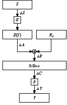
Figure 12.5 DES round function.
Look at the last round of DES. (Differential cryptanalysis ignores the initial and final permutation. They have no effect on the attack, except to make it harder to explain.) If we can identify K16 then we have 48 bits of the key. (Remember, the subkey in each round consists of 48 bits of the 56-bit key.) The other 8 bits we can get by brute force. Differential cryptanalysis will get us K16.
Certain differences in plaintext pairs have a high probability of causing certain differences in the resulting ciphertext pairs. These are called characteristics. Characteristics extend over a number of rounds and essentially define a path through these rounds. There is an input difference, a difference at each round, and an output difference — with a specific probability.
You can find these characteristics by generating a table where the rows represent the possible input XORs (the XOR of two different sets of input bits), the columns represent the possible output XORs, and the entries represent the number of times a particular output XOR occurs for a given input XOR. You can generate such a table for each of DES’s eight S-boxes.
For example, Figure 12.6a is a one-round characteristic. They input difference of the left side is L; it could be anything. The input difference of the right side is 0. (The two inputs have the same right-hand side, so their difference is 0.) Since there is no difference going in to the round function, then there is no difference coming out of the round function. Therefore, the output difference of the left side is L ⊕ 0 = L, and the output difference of the right side is 0. This is a trivial characteristic, and is true with probability 1.
Figure 12.6b is a less obvious characteristic. Again, the input difference to the left side is arbitrary: L. The input difference to the right side is 0x60000000; the two inputs differ in only the second and third bits. With a probability of 14/64, the output difference of the round function is L ⊕ 0x00808200. This means that the output difference of the left side is L ⊕ 0x00808200 and the output difference of the right side is 0x60000000 — with probability 14/64.
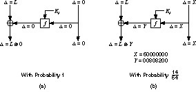
Figure 12.6 DES characteristics.
Different characteristics can be joined. And, assuming the rounds are independent, the probabilities can be multiplied. Figure 12.7 joins the two characteristics previously described. The input difference to the left side is 0x00808200 and the input difference to the right side is 0x60000000. At the end of the first round the input difference and the output of the round function cancel out, leaving an output difference of 0. This feeds into the second round; the final output difference of the left side is 0x60000000 and the final output difference of the right side is 0. This two-round characteristic has a probability of 14/64.
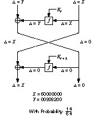
Figure 12.7 A two-round DES characteristic.
A plaintext pair that satisfies the characteristic is a right pair. A plaintext pair which does not is a wrong pair. A right pair will suggest the correct round key (for the last round of the characteristic); a wrong pair will suggest a random round key.
To find the correct round key, simply collect enough guesses so that one subkey is suggested more often than all the others. In effect, the correct subkey will rise out of all the random alternatives.
So, the basic differential attack on n-round DES will recover the 48-bit subkey used in round n, and the remaining 8 key bits are obtained by brute-force guessing.
There are still considerable problems. First, there is a negligible chance of success until you reach some threshold. That is, until you accumulate sufficient data you can’t tell the correct subkey from all the noise. And the attack isn’t practical: You have to use counters to assign different probabilities to 248 possible subkeys, and too much data is required to make this work.
At this point, Biham and Shamir tweaked their attack. Instead of a using a 15-round characteristic on 16-round DES, they used a 13-round characteristic and some tricks to get the last few rounds. A shorter characteristic with a higher probability worked better. And they used some clever mathematics to obtain 56-bit key candidates which could be tested immediately, eliminating the need for counters. This attack succeeds as soon as a right pair is found; this avoids the threshold and gives a linear success probability. If you have 1000 times fewer pairs, then you have 1000 times smaller chance of success. This sounds terrible, but it is a lot better than the threshold. There is always some chance of immediate success.
The results are most interesting. Table 12.14 is a summary of the best differential attack against DES with varying numbers of rounds [172]. The first column is the number of rounds. The next two columns are the numbers of chosen plaintexts or known plaintexts that must be examined for the attack, and the fourth column is the number of those plaintexts actually analyzed. The last column is the complexity of analysis, after the required plaintexts are found.
| No. of Rounds | Chosen Plaintexts | Known Plaintexts | Analyzed Plaintexts | Complexity of Analysis |
|---|---|---|---|---|
| 8 | 214 | 238 | 4 | 29 |
| 9 | 224 | 244 | 2 | 232† |
| 10 | 224 | 243 | 214 | 215 |
| 11 | 231 | 247 | 2 | 232† |
| 12 | 231 | 247 | 221 | 221 |
| 13 | 239 | 252 | 2 | 232† |
| 14 | 239 | 251 | 229 | 229 |
| 15 | 247 | 256 | 27 | 237 |
| 16 | 247 | 255 | 236 | 237 |
| † The complexity of the analysis can be greatly reduced for these variants by using about four times as many plaintexts with the clique method. | ||||
The best attack against full 16-round DES requires 247 chosen plaintexts. This can be converted to a known plaintext attack, but that requires 255 known plaintexts. And 237 DES operations are required during analysis.
Differential cryptanalysis works against DES and other similar algorithms with constant S-boxes. The attack is heavily dependent on the structure of the S-boxes; the ones in DES just happen to be optimized against differential cryptanalysis. And the attack works against DES in any of its operating modes — ECB, CBC, CFB, and OFB — with the same complexity [172].
DES’s resistance can be improved by increasing the number of rounds. Chosen-plaintext differential cryptanalysis DES with 17 or 18 rounds takes about the same time as a brute-force search [160]. At 19 rounds or more, differential cryptanalysis becomes impossible because it requires more than 264 chosen plaintexts: Remember, DES has a 64-bit block size, so it only has 264 possible plaintext blocks. (In general, you can prove that an algorithm is resistant to differential cryptanalysis by showing that the amount of plaintext required to mount such an attack is greater than the amount of plaintext possible.)
Here are a few important points. First, this attack is largely theoretical. The enormous time and data requirements to mount a differential cryptanalytic attack put it beyond the reach of almost everyone. To get the requisite data for this attack against a full DES, you have to encrypt a 1.5 megabits-per-second data stream of chosen plaintext for almost three years. Second, this is primarily a chosen-plaintext attack. It can be converted to a known-plaintext attack, but you have to sift through all of the plaintext-ciphertext pairs looking for the useful ones. For full 16-round DES, this makes the attack slightly less efficient than brute force (the differential cryptanalytic attack requires 255.1 operations, and brute force requires 255). The consensus is that DES, when implemented properly, is still secure against differential cryptanalysis.
Why is DES so resistant to differential cryptanalysis? Why are the S-boxes optimized to make this attack as difficult as possible? Why are there as many rounds as required, but no more? Because the designers knew about it. IBM’s Don Coppersmith recently wrote [373,374]:
The design took advantage of certain cryptanalytic techniques, most prominently the technique of “differential cryptanalysis,” which were not known in the published literature. After discussions with NSA, it was decided that disclosure of the design consideration would reveal the technique of differential cryptanalysis, a powerful technique that can be used against many ciphers. This in turn would weaken the competitive advantage the United States enjoyed over other countries in the field of cryptography.
Adi Shamir responded to this, challenging Coppersmith to say that he hadn’t found any stronger attacks against DES since then. Coppersmith has chosen to remain silent on that question [1426].
Table 12.3 showed the number of bits the DES key is rotated after each round: 2 bits after each round, except for 1 bit after rounds 1, 2, 9, and 16. Why?
Related-key cryptanalysis is similar to differential cryptanalysis, but it examines the difference between keys. The attack is different from any previously discussed: The cryptanalyst chooses a relationship between a pair of keys, but does not know the keys themselves. Data is encrypted with both keys. In the known-plaintext version, the cryptanalyst knows the plaintext and ciphertext of data encrypted with the two keys. In the chosen-plaintext version, the cryptanalyst gets to choose the plaintext encrypted with the two keys.
A modified DES, where the key is rotated two bits after every round, is less secure. Related-key cryptanalysis can break that variant using 217 chosen-key chosen plaintexts or 233 chosen-key known plaintexts [158,163].
This attack is not at all practical, but it is interesting for three reasons. One, it is the first cryptanalytic attack against DES’s subkey-generation algorithm. Two, this attack is independent of the number of rounds of the cryptographic algorithm; it’s just as effective against DES with 16 rounds, 32 rounds, or 1000 rounds. And three, DES is impervious to this attack. The variability in the rotation thwarts related-key cryptanalysis.
Linear cryptanalysis is another type of cryptanalytic attack, invented by Mitsuru Matsui [1016,1015,1017]. This attack uses linear approximations to describe the action of a block cipher (in this case, DES.)
This means that if you XOR some of the plaintext bits together, XOR some ciphertext bits together, and then XOR the result, you will get a single bit that is the XOR of some of the key bits. This is a linear approximation and will hold with some probability p. If p ≠ ½, then this bias can be exploited. Use collected plaintexts and associated ciphertexts to guess the values of the key bits. The more data you have, the more reliable the guess. The greater the bias, the greater the success rate with the same amount of data.
How do you identify good linear approximations for DES? Find good 1-round linear approximations and join them together. (Again, ignore the initial and final permutations; they don’t affect the attack.) Look at the S-boxes. There are 6 input bits and 4 output bits. The input bits can be combined using XOR in 63 useful ways (26 - 1), and the output bits can be combined in 15 useful ways. Now, for each S-box you can evaluate the probability that for a randomly chosen input, an input XOR combination equals some output XOR combination. If there is a combination with a high enough bias, then linear cryptanalysis may work.
If the linear approximations are unbiased, then they would hold for 32 of the 64 possible inputs. I’ll spare you the pages of tables, but the most biased S-box is S-box 5. In fact, the second input bit is equal to the XOR of all 4 output bits for only 12 inputs. This translates to a probability of 3/16, or a bias of 5/16, and is the most extreme bias in all the S-boxes. (Shamir noted this in [1423], but could not find a way to exploit it.)
Figure 12.8 shows how to turn this into an attack against the DES round function. The input bit into S-box 5 is b26. (I am numbering the bits from left to right and from 1 to 64. Matsui ignores this convention with DES and numbers his bits from right to left and from 0 to 63. It’s enough to drive you mad.) The 4 output bits from S-box 5 are c17, c18, c19 and c20. We can trace b26 backwards from the input to the S-box. The bit a26 is XORed with a bit from the subkey Ki,26 to obtain b26. And bit X17 goes through the expansion permutation to become a26. After the S-box, the 4 output bits go through the P-box to become 4 output bits of the round function: Y3, Y8, Y14 and Y25. This means that with probability ½ - 5/16 :
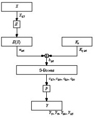
Figure 12.8 A 1-round linear approximation for DES.
X17 ⊕ Y3 ⊕ Y8 ⊕ Y14 ⊕ Y25 = Ki,26
Linear approximations for different rounds can be joined in a manner similar to that discussed under differential cryptanalysis. Figure 12.9 is a 3-round approximation with a probability of ½ + .0061. The individual approximations are of varying quality: The last is very good, the first is pretty good, and the middle is bad. But together the three 1-round approximations give a very good three-round approximation.
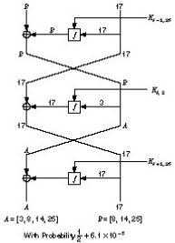
Figure 12.9 A 3-round linear approximation for DES.
The basic attack is to use the best linear approximation for 16-round DES. It requires 247 known plaintext blocks, and will result in 1 key bit. That’s not very useful. If you interchange the role of plaintext and ciphertext and use decryption as well as encryption, you can get 2 key bits. That’s still not very useful.
There are refinements. Use a 14-round linear approximation for rounds 2 through 15. Guess the 6 subkey bits relevant to S-box 5 for the first and last rounds (12 key bits in all). Effectively you are doing 212 linear cryptanalyses in parallel and picking the correct one based on probabilities. This recovers the 12 bits plus the b26 and reversing plaintext and ciphertext recovers another 13 bits. To get the remaining 30 bits, use exhaustive search. There are other tricks, but that’s basically it.
Against full 16-round DES, this attack can recover the key with an average of 243 known plaintexts. A software implementation of this attack recovered a DES key in 50 days using 12 HP9000/735 workstations [1019]. That is the most effective attack against DES at the time of this writing.
Linear cryptanalysis is heavily dependent on the structure of the S-boxes and the S-boxes in DES are not optimized against this attack. In fact, the ordering of the S-boxes chosen for DES lies among the 9 percent to 16 percent that offer the least protection against linear cryptanalysis [1018]. According to Don Coppersmith [373,374], resistance to linear cryptanalysis “was not part of the design criteria of DES.” Either they didn’t know about linear cryptanalysis or they knew about something else even more powerful whose resistance criteria took precedence.
Linear cryptanalysis is newer than differential cryptanalysis, and there may be more performance improvements in the coming years. Some ideas are proposed in [1270,811], but it is not clear that they can be used effectively against full DES. They work very well against reduced round variants, however.
Some work has been done to try to extend the concept of differential cryptanalysis to higher-order differentials [702,161,927,858,860]. Lars Knudsen uses something called partial differentials to attack 6-round DES; it requires 32 chosen plaintexts and 20,000 encryptions [860]. It is still too new to know if these extensions will make it easier to attack full 16-round DES.
Another avenue of attack is differential-linear cryptanalysis: combining differential and linear cryptanalysis. Susan Langford and Hellman have an attack on 8-round DES that recovers 10 key bits with an 80 percent probability of success with 512 chosen plaintexts and a 95 percent probability of success with 768 chosen plaintexts [938]. After the attack, a brute-force search of the remaining keyspace (246 possible keys) is required. While this attack is comparable in time to previous attacks, it requires far less plaintext. However, it doesn’t seem to extend easily to more rounds.
But this attack is still new and work continues. It is possible that there may be a breakthrough some time during the next few years. Maybe there are benefits in combining this attack with higher-order differential cryptanalysis. Who knows?
After differential cryptanalysis became public, IBM published the design criteria for the S-boxes and the P-box [373,374]. The criteria for the S-boxes are:
The criteria for the P-box are:
The paper goes on to discuss the criteria. Generating S-boxes is pretty easy today, but was a complicated task in the early 1970s. Tuchman has been quoted as saying that they ran computer programs for months cooking up the S-boxes.
Some DES implementations use triple-DES (see Figure 12.10) [55]. Since DES is not a group, then the resultant ciphertext is much harder to break using exhaustive search: 2112 attempts instead of 256 attempts. See Section 15.2 for more details.
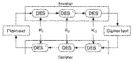
Figure 12.10 Triple-DES.
Another variation is to use a different subkey for each round, instead of generating them from a single 56-bit key [851]. Since 48 key bits are used in each of 16 rounds, this means that the key length for this variant is 768 bits. This variant would drastically increase the difficulty of a brute-force attack against the algorithm; that attack would have a complexity of 2768.
However, a meet-in-the-middle attack (see Section 15.1) would be possible. This would reduce the complexity of attack to 2384; still long enough for any conceivable security needs.
Although independent subkeys foil linear cryptanalysis, this variant is susceptible to differential cryptanalysis and can be broken with 261 chosen plaintexts (see Table 12.15) [167,172]. It would seem that any modification of the key schedule cannot make DES much stronger.
| Modified Operation | Chosen Plaintexts |
|---|---|
| Full DES (no modification) | 247 |
| P permutation | Cannot strengthen |
| Identity permutation | 219 |
| Order of S-boxes | 238 |
| Replace XORs by additions | 239, 231 |
| S-boxes: | |
| Random | 218-220 |
| Random permutations | 233-241 |
| One entry | 233 |
| Uniform tables | 226 |
| Elimination of the E Expansion | 226 |
| Order of E and subkey XOR | 244 |
| GDES (width q = 8): | |
| 16 rounds | 6, 16 |
| 64 rounds | 249 (independent key) |
DESX is a DES variant from RSA Data Security, Inc. that has been included in the MailSafe electronic mail security program since 1986 and the BSAFE toolkit since 1987. DESX uses a technique called whitening (see Section 15.6) to obscure the inputs and outputs to DES. In addition to a 56-bit DES key, DESX has an additional 64-bit whitening key. These 64 bits are XORed to the plaintext before the first round of DES. An additional 64 bits, computed as a one-way function of the entire 120-bit DES key, is XORed to the ciphertext after the last round [155]. Whitening makes DESX much stronger than DES against a brute-force attack; the attack requires (2120)/n operations with n known plaintexts. It also improves security against differential and linear cryptanalysis; the attacks require 261 chosen plaintexts and 260 known plaintexts, respectively [1338].
CRYPT(3) is a DES variant found on UNIX systems. It is primarily used as a one-way function for passwords, but sometimes can also be used for encryption. The difference between CRYPT(3) and DES is that CRYPT(3) has a key-dependent expansion permutation with 212 possible permutations. This was done primarily so that off-the-shelf DES chips could not be used to construct a hardware password-cracker.
Generalized DES (GDES) was designed both to speed up DES and to strengthen the algorithm [1381,1382]. The overall block size increases while the amount of computation remains constant.
Figure 12.11 is a block diagram of GDES. GDES operates on variable-sized blocks of plaintext. Encryption blocks are divided up into q 32-bit sub-blocks; the exact number depends on the total block size (this was variable in the design, but must be fixed for each implementation). In general, q equals the block size divided by 32.
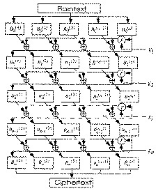
Figure 12.11 GDES.
Function f is calculated once per round on the right-most block. The result is XORed with all the other parts, which are then rotated to the right. GDES has a variable number of rounds, n. There is a slight modification to the last round, so that the encryption and decryption processes differ only in the order of the subkeys (just like DES). In fact, if q = 2 and n = 16, this is DES.
Biham and Shamir [167,168] showed that, using differential cryptanalysis, GDES with q = 8 and n = 16 is breakable with only six chosen plaintexts. If independent subkeys are also used, 16 chosen plaintexts are required. GDES with q = 8 and n = 22 is breakable with 48 chosen plaintexts, and GDES with q = 8 and n = 31 requires only 500,000 chosen plaintexts to break. Even GDES with q = 8 and n = 64 is weaker than DES; 249 chosen plaintexts are required to break it. In fact, any GDES scheme that is faster than DES is also less secure (see Table 12.15).
A variant of this scheme recently appeared [1591]. It is probably no more secure than the original GDES. In general, any large block DES variant that is faster than DES is probably also less secure than DES.
Other DES modifications centered around the S-boxes. Some designs made the order of the S-boxes variable. Other designers varied the contents of the S-boxes themselves. Biham and Shamir showed [170,172] that the design of the S-boxes, and even the order of the S-boxes themselves, were optimized against differential cryptanalysis:
The replacement of the order of the eight DES S-boxes (without changing their value) also makes DES much weaker: DES with 16 rounds of a particular replaced order is breakable in about 238 steps.... DES with random S-boxes is shown to be very easy to break. Even a minimal change of one entry of one of the DES S-boxes can make DES easier to break.
The DES S-boxes were not optimized against linear cryptanalysis. There are better S-boxes than the ones that come with DES, but blindly choosing new S-boxes isn’t a good idea.
Table 12.15 [167,169] lists some modifications to DES and the number of chosen plaintexts required for differential cryptanalysis. One change not listed, combining the left and right halves using addition mod 24 instead of XOR, is 217 times harder to break than DES [689].
RDES is a variant that replaces swapping the left and right halves at the end of each round with a key-dependent swap [893]. The swappings are fixed, depending solely on the key. This means that the 15 key-dependent swaps occur with 215 possible instances, and that the variant is not resistant to differential cryptanalysis [816,894,112]. RDES has a large number of weak keys. In fact, almost every key is weaker than a typical DES key. This variant should not be used.
A better idea is to swap only within the right half, at the beginning of each round. Another better idea is to make the swapping dependent on the input data and not a static function of the key. There are a number of possible variants [813,815]. In RDES-1, there is a data-dependent swap of the 16-bit words at the beginning of each round. In RDES-2, there is a data-dependent swap of the bytes at the beginning of each round after the 16-bit swappings as in RDES-1. And so on through RDES-4. RDES-1 is secure against both differential cryptanalysis [815] and linear cryptanalysis [1136]. Presumably RDES-2 and greater are as well.
A group of Korean researchers, led by Kwangjo Kim, has attempted to find a set of S-boxes that are optimally secure against both linear and differential cryptanalysis. Their first attempt, known as s2DES, was presented in [834] and shown to be worse than DES against differential cryptanalysis in [855,858]. Their next attempt, s3DES, was presented in [839] and shown to be worse than DES against linear cryptanalysis [856,1491,1527,858,838]. Biham suggested a minor change to make s3DES secure against both linear and differential cryptanalysis [165]. The group went back to their computers and developed better techniques for S-box design [835,837]. They proposed s4DES [836] and then s5DES [838,944].
Table 12.16 gives the s3DES S-boxes with S-box 1 and S-box 2 reversed, which are secure against both differential and linear cryptanalysis. Sticking this variant in a triple-DES mix is sure to irritate cryptanalysts.
| S-box 1: | |||||||||||||||
| 13 | 14 | 0 | 3 | 10 | 4 | 7 | 9 | 11 | 8 | 12 | 6 | 1 | 15 | 2 | 5 |
| 8 | 2 | 11 | 13 | 4 | 1 | 14 | 7 | 5 | 15 | 0 | 3 | 10 | 6 | 9 | 12 |
| 14 | 9 | 3 | 10 | 0 | 7 | 13 | 4 | 8 | 5 | 6 | 15 | 11 | 12 | 1 | 2 |
| 1 | 4 | 14 | 7 | 11 | 13 | 8 | 2 | 6 | 3 | 5 | 10 | 12 | 0 | 15 | 9 |
| S-box 2: | |||||||||||||||
| 15 | 8 | 3 | 14 | 4 | 2 | 9 | 5 | 0 | 11 | 10 | 1 | 13 | 7 | 6 | 12 |
| 6 | 15 | 9 | 5 | 3 | 12 | 10 | 0 | 13 | 8 | 4 | 11 | 14 | 2 | 1 | 7 |
| 9 | 14 | 5 | 8 | 2 | 4 | 15 | 3 | 10 | 7 | 6 | 13 | 1 | 11 | 12 | 0 |
| 10 | 5 | 3 | 15 | 12 | 9 | 0 | 6 | 1 | 2 | 8 | 4 | 11 | 14 | 7 | 13 |
| S-box 3: | |||||||||||||||
| 13 | 3 | 11 | 5 | 14 | 8 | 0 | 6 | 4 | 15 | 1 | 12 | 7 | 2 | 10 | 9 |
| 4 | 13 | 1 | 8 | 7 | 2 | 14 | 11 | 15 | 10 | 12 | 3 | 9 | 5 | 0 | 6 |
| 6 | 5 | 8 | 11 | 13 | 14 | 3 | 0 | 9 | 2 | 4 | 1 | 10 | 7 | 15 | 12 |
| 1 | 11 | 7 | 2 | 8 | 13 | 4 | 14 | 6 | 12 | 10 | 15 | 3 | 0 | 9 | 5 |
| S-box 4: | |||||||||||||||
| 9 | 0 | 7 | 11 | 12 | 5 | 10 | 6 | 15 | 3 | 1 | 14 | 2 | 8 | 4 | 13 |
| 5 | 10 | 12 | 6 | 0 | 15 | 3 | 9 | 8 | 13 | 11 | 1 | 7 | 2 | 14 | 4 |
| 10 | 7 | 9 | 12 | 5 | 0 | 6 | 11 | 3 | 14 | 4 | 2 | 8 | 13 | 15 | 1 |
| 3 | 9 | 15 | 0 | 6 | 10 | 5 | 12 | 14 | 2 | 1 | 7 | 13 | 4 | 8 | 11 |
| S-box 5: | |||||||||||||||
| 5 | 15 | 9 | 10 | 0 | 3 | 14 | 4 | 2 | 12 | 7 | 1 | 13 | 6 | 8 | 11 |
| 6 | 9 | 3 | 15 | 5 | 12 | 0 | 10 | 8 | 7 | 13 | 4 | 2 | 11 | 14 | 1 |
| 15 | 0 | 10 | 9 | 3 | 5 | 4 | 14 | 8 | 11 | 1 | 7 | 6 | 12 | 13 | 2 |
| 12 | 5 | 0 | 6 | 15 | 10 | 9 | 3 | 7 | 2 | 14 | 11 | 8 | 1 | 4 | 13 |
| S-box 6: | |||||||||||||||
| 4 | 3 | 7 | 10 | 9 | 0 | 14 | 13 | 15 | 5 | 12 | 6 | 2 | 11 | 1 | 8 |
| 14 | 13 | 11 | 4 | 2 | 7 | 1 | 8 | 9 | 10 | 5 | 3 | 15 | 0 | 12 | 6 |
| 13 | 0 | 10 | 9 | 4 | 3 | 7 | 14 | 1 | 15 | 6 | 12 | 8 | 5 | 11 | 2 |
| 1 | 7 | 4 | 14 | 11 | 8 | 13 | 2 | 10 | 12 | 3 | 5 | 6 | 15 | 0 | 9 |
| S-box 7: | |||||||||||||||
| 4 | 10 | 15 | 12 | 2 | 9 | 1 | 6 | 11 | 5 | 0 | 3 | 7 | 14 | 13 | 8 |
| 10 | 15 | 6 | 0 | 5 | 3 | 12 | 9 | 1 | 8 | 11 | 13 | 14 | 4 | 7 | 2 |
| 2 | 12 | 9 | 6 | 15 | 10 | 4 | 1 | 5 | 11 | 3 | 0 | 8 | 7 | 14 | 13 |
| 12 | 6 | 3 | 9 | 0 | 5 | 10 | 15 | 2 | 13 | 4 | 14 | 7 | 11 | 1 | 8 |
| S-box 8: | |||||||||||||||
| 13 | 10 | 0 | 7 | 3 | 9 | 14 | 4 | 2 | 15 | 12 | 1 | 5 | 6 | 11 | 8 |
| 2 | 7 | 13 | 1 | 4 | 14 | 11 | 8 | 15 | 12 | 6 | 10 | 9 | 5 | 0 | 3 |
| 4 | 13 | 14 | 0 | 9 | 3 | 7 | 10 | 1 | 8 | 2 | 11 | 15 | 5 | 12 | 6 |
| 8 | 11 | 7 | 14 | 2 | 4 | 13 | 1 | 6 | 5 | 9 | 0 | 12 | 15 | 3 | 10 |
Linear and differential cryptanalysis work only if the analyst knows the composition of the S-boxes. If the S-boxes are key-dependent and chosen by a cryptographically strong method, then linear and differential cryptanalysis are much more difficult. Remember though, that randomly generated S-boxes have very poor differential and linear characteristics; even if they are secret.
Here is a method to use 48 additional key bits to generate S-boxes that are resistant to both linear and differential cryptanalysis [165].
The complexity of a differential cryptanalysis attack against this system is 251; the complexity of a linear cryptanalysis attack is 253. The complexity of exhaustive search is 2102.
What is neat about this DES variant is that it can be implemented in existing hardware. Several DES chip vendors sell DES chips with loadable S-boxes. This S-box generation method can be done outside the chip and then loaded in. Differential and linear cryptanalysis require so much known or chosen plaintext as to be unworkable, and a brute-force attack is inconceivable — with no speed penalties.
The answer is both easy and hard. The easy answer just looks at key length (see Section 7.1). A brute-force DES-cracking machine that can find a key in an average of 3.5 hours cost only $1 million in 1993 [1597,1598]. DES is so widespread that it is naïve to pretend that the NSA and its counterparts haven’t built such a machine. And remember that cost will drop by a factor of 5 every 10 years. DES will only become less secure as time goes on.
The hard answer tries to estimate cryptanalytic techniques. Differential cryptanalysis was known by the NSA long before the mid-1970s, when DES first became a standard. It is naïve to pretend that the NSA theoreticians have been idle since then; almost certainly they have developed newer cryptanalytic techniques that can be applied against DES. But there are no facts, only rumors.
Winn Schwartau writes that the NSA had built a massively parallel DES-cracking machine as early as the mid-1980s [1404]. At least one such machine was built by Harris Corp. with a Cray Y-MP as a front end. Supposedly there are a series of algorithms that can reduce the complexity of a DES brute-force search by several orders of magnitude. Contextual algorithms, based on the inner workings of DES, can scrap sets of possible keys based on partial solutions. Statistical algorithms reduce the effective key size even further. And other algorithms choose likely keys — words, printable ASCII, and so on (see Section 8.1) — to test. The rumor is that the NSA can crack DES in 3 to 15 minutes, depending on how much preprocessing they can do. And these machines cost only $50,000 each, in quantity.
A different rumor is that if the NSA has a large amount of plaintext and ciphertext, its experts can perform some kind of statistical calculation and then go out to an array of optical disks and retrieve the key.
These are just rumors, but they don’t give me a warm, fuzzy feeling about DES. It has just been too big a target for too long. Almost any change to DES will be more annoying; maybe the resultant cipher will be easier to break, but the NSA might not have the resources to devote to the problem.
My recommendation is to use Biham’s construction for key-dependent S-boxes. It is easy to implement in software and in hardware chips that have loadable S-boxes, and has no performance penalty over DES. It increases the algorithm’s resistance to a brute-force attack, makes differential and linear cryptanalysis harder, and gives the NSA something at least as strong as DES — but different — to worry about.